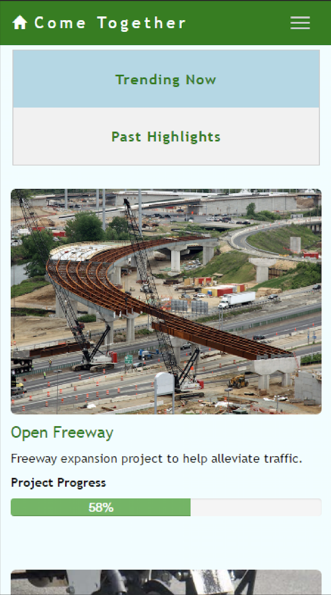

Joshua Tjong
Projects
Résumé
About Me
Hello! I'm Joshua.
UX Researcher based in San Francisco
Projects

Come Together
Music Management Playlist
Data Science Project
About Me
I am a passionate, human-centered researcher who enjoys probing and uncovering the true reasons behind an action(s) to help create the best possible user experience. I enjoy collaborating cross-functionally across different teams by advocating for users through research sessions, design-thinking workshops, and presuasive stories. I have a degree from
UC San Diego
in Cognitive Science specializing in Human-Computer Interaction with minors in Computer Science and Psychology. I am currently part of the User Research team at
CircleCI
. Former Human Factors Engineering Intern at SONY Electronics & Media Psychology/UX Research Intern at a Non-profit. Additional, I help support the
UCSD Center for Digital Learning
work's on MOOCs and K-12 computer science education. Actively looking for new opportunities in UX Research.